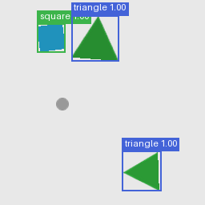
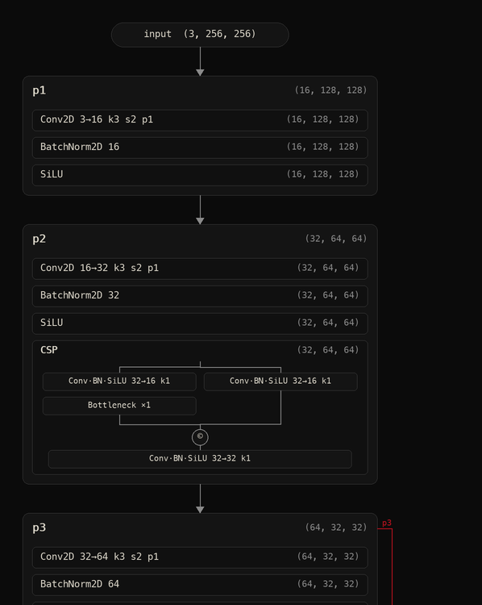

Demo
examples/demo.py runs the whole stack in a few minutes: Felix draws a dataset of circles, squares and triangles, Workflow builds a detector, trains it, benchmarks it, runs a prediction and saves everything.
pip install Pillow rich torch # plus felix and workflow (see Install)
python examples/demo.py # ~25 epochs on 600 images
python examples/demo.py --epochs 40 --pairs 1200 --out my_demoOutputs land in demo_out/: the dataset (shapes_600.felix), architecture.png / .svg, training runs (runs/last.nbm, best.nbm, epoch_N.nbm), evaluation.json, confusion_matrix.png, prediction.png and demo.nbm.
What it does, step by step
1. A Felix pipeline makes the data. Three shape classes, 1-3 objects per image (the second and third use a threshold), random scale, rotation, hue and brightness, a grey background, and a small grey distractor circle painted *after* fx.gen() so it is in the image but not in the annotations.
2. The architecture is a backbone (p1…p5 with CSP and SPPF blocks), FPN, PAN and a BBoxHead, all wired by name:
model = wf.Model(
wf.Stage("p1", *cbs(3, 16)),
wf.Stage("p2", *cbs(16, 32), wf.CSP(32)),
wf.Stage("p3", *cbs(32, 64), wf.CSP(64, n=2)),
wf.Stage("p4", *cbs(64, 128), wf.CSP(128, n=2)),
wf.Stage("p5", *cbs(128, 256), wf.SPPF(256)),
wf.Stage("neck", wf.FPN(inputs=("p3", "p4", "p5"), channels=64, outputs=("n3", "n4", "n5"))),
wf.Stage("pan", wf.PAN(inputs=("n3", "n4", "n5"), channels=64, outputs=("m3", "m4", "m5"))),
wf.Stage("head", wf.BBoxHead(inputs=("m3", "m4", "m5"), classes=3, outputs=("d3", "d4", "d5"))),
)
model.summary() # shapes, parameters, FLOPs, memory
model.export_graph("architecture.png") # the computation graph3. Training is one call, and Ctrl+C is safe:
model.train(dataset, epochs=25, batch_size=16, save_every=5)4. Evaluation and prediction use the held-out test split and a single image:
results = model.benchmark(dataset.test) # mAP, precision/recall/F1, per-class AP, confusion matrix
pred = model.predict("test_image.png", conf=0.3)
pred.save("prediction.png")5. Deploy. The model is one .nbm file:
workflow export demo_out/demo.nbm --format onnx
workflow script demo_out/demo.nbm --preset webcam # also image, folder, videoTypical result
The default run (600 generated images, 25 epochs, about 3 minutes on an Apple-silicon laptop using the GPU) reached mAP50 0.97 and mAP50-95 0.84 on the 60-image held-out test split (precision 0.96, recall 0.96), at about 150 images/s end to end. Your numbers vary with the random dataset and hardware.

